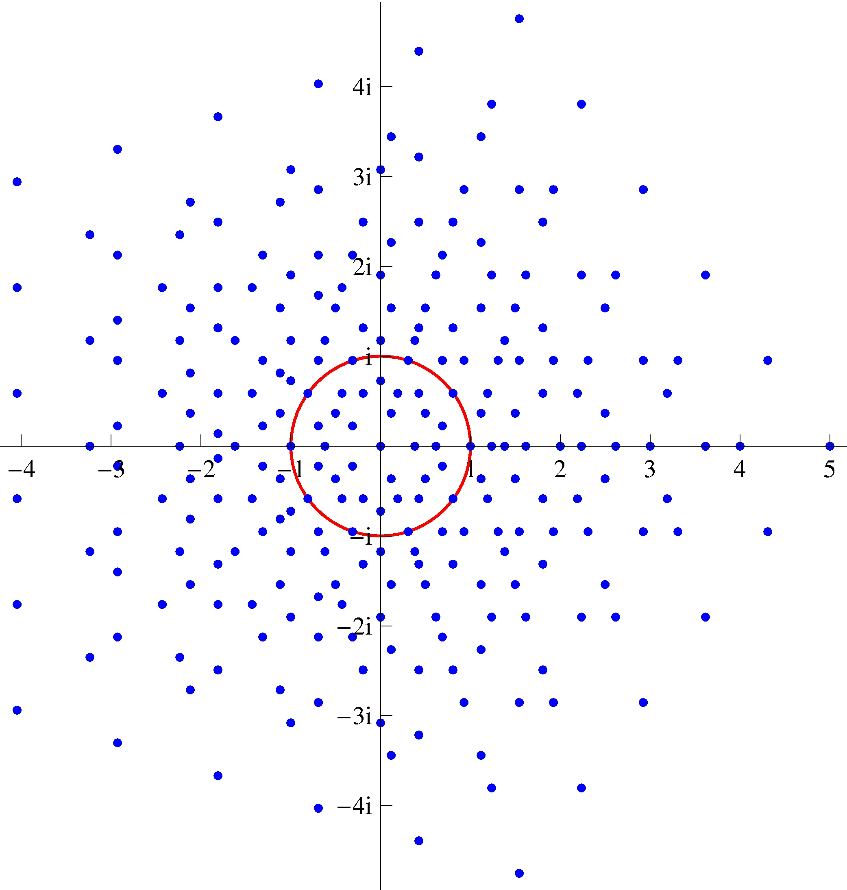

Mathematical Art
Sometimes in research one accidentally encounters beautiful images stemming from mathematical operations. This is particularly likely if one works with visualization of mathematical objects with the computer. I want to share two such encounters here.Circles
In one research project we encountered the following problem: Given a set of circles in the 2-dimensional plane. Intersect these circles and color the intersection areas according to the number of circles they belong to. Implementing this very simple mathematical description into a procedure on the computer leads to fantastically beautiful pictures. Particularly beautiful images can be generated from circles which all have the same radius and whose centers are arranged in a symmetric fashion.
Characters
An important concept in the theory of finite groups is the character of a representation D of a group. It is given by the mapping . I.e. we take a representation D of the group G and form its trace. Since all representations of a finite group are equivalent to unitary representations, we know that all eigenvalues of D(g) have absolute value one. And since G is a finite group, we know that s.t. . Therefore, all eigenvalues of D(g) must be m-th roots of unity. Thus, the characters of a finite group are sums of dim(D) m-th roots of unity, where m is the order of the group element. This leads to the interesting fact that, for a group element of order 1,2,3,4 or 6, the corresponding character must have absolute value greater or equal one, or zero. This is easy to see when one plots the sums of these roots of unity in the complex plane. See page 36 of the talk"Helpful tools in finite group theory". When doing studies in this direction, the following beautiful image of the sum of up to five fifth roots of unity emerged as a by-product:
The red circle is the unit circle. All roots of unity lie on the unit circle. There are ten points on the circle here because some sums of two fifth roots of unity are tenth roots of unity.